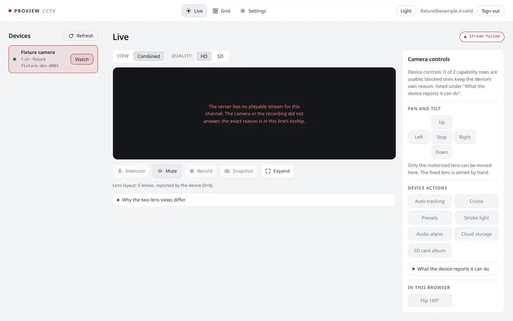
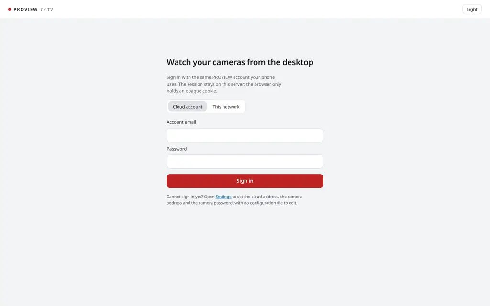
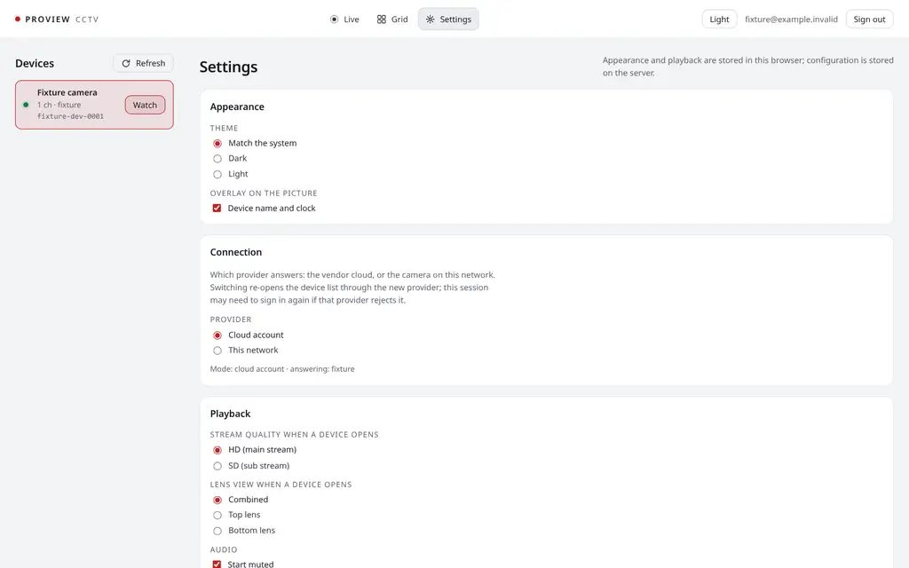

ZHA-3941 · 27 Oktober 2026 · tahap mockup, belum ada perubahan kode
PROVIEW di meja kerja: gambarnya yang jadi halaman
Usulan desain ulang klien desktop/web PROVIEW. Tiga arah dibandingkan, satu direkomendasikan, lalu arah itu digambar penuh: semua layar dan keadaan di 1440×900 dan 1280×800, tema gelap dan terang, plus sistem visual, catatan interaksi, aksesibilitas dengan angka kontras terhitung, dan daftar hal yang sengaja tidak dipakai.
02Apa yang salah di UI sekarang (diukur)02–03AArah A — Rak04–05BArah B — Jendela (direkomendasikan)06–07CArah C — Dinding08–0910Perbandingan dan rekomendasi1011Live, kamera, lensa, gerak, layar penuh, interkom, rekam11–19
20Grid 2–4 kamera dan kegagalannya20–2223Memuat, gagal, beku, offline23–2526Masuk, galat, sesi habis26–2829Pengaturan dan info perangkat29–3132Sistem: tipe, warna, ruang, ikon, gerak, komponen32–3536Interaksi, aksesibilitas, anti-slop, kritik diri, implementasi36–42
PROVIEW · redesign v1 · Sampul01
Apa yang salah di UI sekarang
web/ @ 43b1879 · fixture provider · 1440×900

Layar Live sekarang, dijalankan lokal dengan PROVIEW_PROVIDER=fixture. Angka di kanan diukur dari DOM halaman ini, bukan ditaksir.
Angka
gambar
Stage terukur 796×260 px saat dibuka: 16 % layar. Bahkan diisi gambar 16:9 selebar penuh, paling besar 796×448: 27,5 %. Sisanya chrome.
kontrol
27 kontrol terlihat di layar Live, 16 di antaranya nonaktif.
eyebrow
5 label kapital ber-tracking di satu layar: VIEW, QUALITY, PAN AND TILT, DEVICE ACTIONS, IN THIS BROWSER.
radius
5 radius berbeda (6, 10, 14, 999 px, 50 %).
merah
Satu merah untuk tiga arti: perangkat terpilih (baris pink), tombol Mute, dan "Stream failed".
Kenapa terasa "AI slop"
Semua diberi bobot yang sama: tombol PTZ, tujuh aksi perangkat, penjelasan lensa, dan video berebut perhatian.
Panel kanan penuh tombol yang sebagian besar tidak bisa dipakai. Kejujuran ("diblokir, ini buktinya") benar, tapi tempatnya bukan di layar utama.
Penjelasan teknis ("Why the two lens views differ") tinggal permanen di layar yang dibuka tiap hari.
Email akun, tombol tema berupa teks, dan tombol Watch di baris yang sudah terpilih: kontrol yang tidak mengubah apa yang dilihat.
PROVIEW · redesign v1 · Kritik UI sekarang02
Masuk dan Pengaturan sekarang
web/index.html 361 baris · style.css 593 baris

Masuk. Kolom tengah, judul besar, satu CTA: pola hero-di-tengah. Lede menjelaskan cookie untuk developer, bukan untuk pemilik kamera.

Pengaturan. Satu halaman panjang, lima kelompok berbingkai dengan bobot sama. Tidak ada tempat yang menunjukkan ada perubahan belum tersimpan.
Yang dipertahankan
Isinya jujur dan tetap: empat keadaan stage (memuat, main, beku, gagal), "playing" baru setelah frame terdekode, laporan kapabilitas dengan bukti dari perangkat, label "needs restart" di field, rahasia tidak pernah dibaca balik ke halaman, pengaturan bisa dibuka sebelum masuk.
Yang dibuang
Rail perangkat permanen, panel Camera controls, segmented View/Quality di atas stage, eyebrow kapital, badge sumber di atas video, disclosure penjelasan lensa di layar Live, tombol teks Theme, email akun di topbar, font sistem yang berbeda di tiap OS.
PROVIEW · redesign v1 · Kritik UI sekarang03
Arah A — Rak
aplikasi NVR konsumen yang dirapikan · terang
Gagasan
Rail kiri dengan thumbnail tiap kamera, video besar di kanan, tombol pil di bawah. Bentuk yang dikenal dari aplikasi XMEye/Ezviz di desktop.
Yang bagus
Kamera lain selalu terlihat; pindah kamera satu klik.
Paling mudah dipahami tanpa penjelasan.
Ongkosnya
Gambar hanya 54,4 % layar (diukur). 264 px rail dibayar oleh video setiap saat, padahal pengguna punya satu sampai lima kamera.
Thumbnail bergerak berarti lima stream terbuka; thumbnail diam berarti gambar basi tanpa jam. Yang pertama memakan bandwidth, yang kedua berbohong tentang "live".
Pil berbayang, badge hijau "Live", rail putih: dekat sekali ke template dashboard.
PROVIEW · redesign v1 · Arah A — Rak04
Arah A — kenapa tidak
dinilai terhadap PRODUCT.md
Prinsip 1 · gambar menang
Gagal. Rail menetap memakan 18 % lebar di 1440 px dan 21 % di 1280 px. Di laptop 1280×800 video turun mendekati setengah layar.
Prinsip 2 · warna hanya untuk keadaan
Lulus setelah diturunkan ke netral seperti di mock ini. Versi awalnya memakai gradien biru pada logo dan tombol utama; itu dicabut karena dekoratif.
Prinsip 3 · katakan yang benar
Thumbnail adalah masalahnya: stream per baris melanggar "jendela tetap responsif dengan empat tile"; snapshot statis harus diberi jam, dan baris jadi ramai.
Kapan arah ini menang
Pengguna dengan 8–16 kanal yang pindah kamera terus-menerus. Itu bukan pengguna di PRODUCT.md, yang membuka satu kamera, melihat sebentar, lalu menutup.
Yang diambil ke arah B
Pindah kamera harus satu langkah: di B menjadi menu di nama kamera plus tombol angka 1–9, tanpa menempati layar.
PROVIEW · redesign v1 · Arah A — Rak05
Arah B — Jendela
direkomendasikan · gelap · 1440×900
Gagasan
Aplikasi ini satu jendela ke satu kamera. Video mengisi halaman; di atasnya satu baris (nama kamera yang juga pemilih kamera, tiga ikon), di bawahnya satu baris keterangan dan satu baris kontrol. Tidak ada panel samping.
Angka
gambar
72,3 % layar (diukur di 1440×900), naik dari maksimum 27,5 %.
kontrol
11 terlihat, semuanya aktif. Kontrol perangkat yang tidak didukung tidak tampil di sini; tabel buktinya ada di Pengaturan.
Rasa
Grafit netral yang tidak bersaing dengan gambar, tipe teknis yang tenang (IBM Plex), satu baris teks kecil yang mengatakan apa yang sedang terjadi. Seperti pemutar video yang baik, bukan ruang kontrol.
PROVIEW · redesign v1 · Arah B — Jendela06
Arah B — dengan beberapa kamera
grid · terang · 1440×900
Satu kamera dulu, grid bila diminta
Layar awal selalu satu kamera, karena itu pekerjaan utamanya. Grid satu klik (atau G) untuk "semua baik-baik saja?" dan menampilkan seluruh frame tiap kamera, tanpa crop.
Gagal per tile
Tiap tile streamnya sendiri dan gagalnya sendiri; tile lain tetap main. Keterangan di bawah tile, bukan di atas gambar.
Satu bahasa
Keterangan, jam monospace, dot status, dan baris kontrol di grid sama persis dengan layar satu kamera. Tile terpilih ditandai garis tinta 1,5 px, bukan warna aksen.
PROVIEW · redesign v1 · Arah B — Jendela07
Arah C — Dinding
monitor ruang kontrol · gelap pekat
Gagasan
Grid penuh tepi ke tepi, rail ikon 54 px, label kanal monospace di atas gambar, bitrate dan resolusi di setiap tile. Bahasa visual software NVR profesional.
Yang bagus
Video menutup hampir seluruh layar.
Cocok untuk monitor kedua yang dibiarkan menyala.
Ongkosnya
Gambar di-crop (object-fit: cover) supaya grid rapat: lensa ganda kehilangan sebagian, bertentangan dengan aturan "grid menampilkan seluruh frame".
Label di atas video selalu berebut dengan gambar, terutama gambar terang.
Kode kanal, bitrate, ikon tanpa teks: harus dipelajari. PRODUCT.md menyebut ini anti-referensi.
PROVIEW · redesign v1 · Arah C — Dinding08
Arah C — kenapa tidak
dinilai terhadap PRODUCT.md
Pemakainya salah
C dibuat untuk operator yang menatap layar seharian. Pengguna PROVIEW membuka aplikasi, melihat sebentar, lalu menutup. "Rasanya harus seperti alat rumah tangga, bukan ruang kontrol."
Refleks kategori
"Aplikasi CCTV → gelap, monospace, label hijau terminal" adalah tebakan pertama dari kategorinya saja: tanda slop tingkat pertama menurut skill impeccable.
Ikon tanpa teks
Rail ikon tanpa label membuat pengguna menebak. B memberi teks pada setiap kontrol yang mengubah gambar; hanya tiga ikon navigasi dan layar penuh yang tanpa teks, dengan nama aksesibel dan tooltip.
Yang diambil ke arah B
Layar penuh B adalah sepotong C: tepi ke tepi, satu baris monospace kecil di bawah, tidak ada chrome lain. Bedanya, di B itu pilihan, bukan default.
PROVIEW · redesign v1 · Arah C — Dinding09
Rekomendasi: Arah B — Jendela
angka gambar diukur dari DOM mock di 1440×900
Kriteria
A · Rak
B · Jendela
C · Dinding
Luas gambar, 1 kamera
54,4 %
72,3 %
tidak ada mode 1 kamera
Seluruh frame terlihat
ya
ya
tidak (crop)
Kontrol di layar utama
8 tombol + 5 baris kamera
11, semua aktif
4 ikon tanpa teks
Stream terbuka saat menonton 1 kamera
1 + 4 thumbnail
1
4
Perlu belajar sebelum pakai
tidak
tidak
ya
Laptop 1280×800
video mengecil karena rail
struktur sama
struktur sama
JS tambahan dari sekarang
thumbnail + rail
menu kamera, tahan-untuk-bicara
grid saja
Alasan
B satu-satunya arah yang membuat gambar benar-benar elemen terbesar dan paling terang, tanpa memotong frame dan tanpa membuka stream yang tidak ditonton. Ia juga yang paling sedikit menuntut pengguna belajar: satu nama kamera di atas, satu baris kontrol berlabel di bawah.
Risiko yang diterima
Kamera lain tidak terlihat terus-menerus. Ditebus dengan grid satu klik, tombol angka, dot status di menu kamera, dan banner bila kamera yang sedang dibuka tidak menjawab.
PROVIEW · redesign v1 · Rekomendasi10
Live — anatomi
Gate camera · dual lens · gelap · 1440×900
Urutan baca
Gambar. Satu-satunya elemen terang; stage hitam di kedua tema.
Nama kamera kiri atas, dengan dot status.
Keterangan di bawah gambar: nama, keadaan dalam kata-kata, jam.
Kontrol: aksi di kiri, tampilan di kanan.
Kenapa tiap elemen ada
nama ▾
Menjawab "kamera mana" dan sekaligus pemilih kamera. Hapus → butuh rail.
3 ikon
Grid, Pengaturan, Tema. Tidak mengubah gambar, jadi kecil dan tanpa teks.
keterangan
"live, bottom lens, 0.4 s behind" satu-satunya bukti gambar ini terkini. Hapus → beku tak terlihat.
Talk, Sound
Suara keluar dan masuk, dikelompokkan.
Record, Snapshot
Menyimpan sesuatu, dikelompokkan.
Move
Hanya muncul untuk lensa yang bisa digerakkan.
lensa, kualitas
Mengubah tampilan, bukan kamera; teks kecil tanpa bingkai.
⤢
Layar penuh.
PROVIEW · redesign v1 · Live — anatomi11
Live — tema terang
1440×900 · stage tetap hitam
Tema terang bukan inversi: halaman abu pucat (bukan putih, bukan krem) supaya video tetap paling terang tanpa ruangan terasa menyilaukan. Stage dan teks di atasnya memakai token --stage-* yang sama di kedua tema.
PROVIEW · redesign v1 · Live — terang12
Laptop 1280×800
live · gelap dan terang
Gelap. Struktur sama, tanpa breakpoint: topbar 56 px, keterangan satu baris, kontrol 64 px; sisanya video.Terang. Di tinggi 800 px gambar 16:9 masih mengisi lebar penuh.
Di bawah 1100 px lebar label Lens dan Quality pindah ke menu ⋯; di bawah 760 px Talk/Sound/Record/Snapshot menjadi ikon dengan tooltip. Tidak ada tipe fluid.
PROVIEW · redesign v1 · Laptop 1280×80013
Satu perangkat dan belum ada perangkat
gelap · terang · 1440×900
Satu kamera. Nama tanpa ▾ karena tidak ada yang dipilih; ikon grid nonaktif. Kamera berlensa tunggal tidak punya pemilih lensa atau Move.Belum ada kamera. Kalimat yang mengajari langkah berikutnya, dua aksi, tanpa ilustrasi.
Interaksi. Refresh memanggil ulang daftar perangkat dan menampilkan skeleton nama kamera; bila tetap kosong, kalimat yang sama muncul lagi dengan jam pengecekan terakhir.
PROVIEW · redesign v1 · Satu perangkat dan belum ada perangkat14
Pemilih kamera
menu dari nama kamera · gelap
Klik
Nama kamera membuka menu di bawahnya. Tiap baris: dot status, nama, kanal dan jenis lensa, angka pintas. Kamera offline tetap ada di daftar dengan jamnya.
Keyboard
1–9 pindah kamera dari mana saja. Di menu: ↑↓ pindah, Enter pilih, Esc tutup dan fokus kembali ke nama.
Pindah kamera
Stream lama ditutup setelah stream baru menampilkan frame pertama; sampai itu frame lama tetap tampil dengan keterangan "connecting to Front door". Tidak ada layar hitam di antaranya.
JS
Popover API (popovertarget) bila WebView mendukung; kalau tidak, position: fixed + ±40 baris untuk fokus berputar.
PROVIEW · redesign v1 · Pemilih kamera15
Pemilih lensa
Gate camera · lensa ganda
Menu lensa. "Both lenses" menampilkan frame seperti dikirim kamera: dua gambar bertumpuk. Kalimat di bawah menyatakan pembagian disimpulkan dari bentuk frame.Lensa atas dipilih. Crop dari frame yang sama, tanpa koneksi kedua. Lensa atas tetap, jadi Move hilang dari baris kontrol.
Interaksi.L memutar Both → Top → Bottom. Label lensa memakai peran ("pan and tilt from here", "fixed, aimed by hand") hanya bila server melaporkan PTZ; sebelum itu posisi. Penjelasan panjang di UI lama menjadi satu kalimat di menu ini.
PROVIEW · redesign v1 · Pemilih lensa16
Gerak (pan/tilt)
lensa bawah · Move aktif · gelap
Kapan ada
Tombol Move tampil hanya bila laporan kapabilitas menyebut PTZ supported untuk lensa yang sedang ditampilkan. Lensa tetap tidak pernah menampilkan pad.
Pad
Pojok kanan bawah gambar, di atas latar gelap 90 % agar terbaca di gambar apa pun. Tombol 40×40 px. Daftar preset di bawahnya, nama dari perangkat.
Interaksi
Tahan tombol arah atau ←↑→↓: kamera bergerak selama ditahan (langkah 300 ms sesuai laporan server). Space berhenti. Esc atau Move lagi menutup pad. Keterangan menulis lensa dan backend yang benar-benar dipakai server.
Gagal
Penolakan server muncul di keterangan selama 6 detik, bukan toast.
PROVIEW · redesign v1 · Gerak (pan/tilt)17
Layar penuh
F · gelap
Yang tersisa
Hanya gambar dan satu baris monospace kecil: kamera, lensa, live, jam. Baris itu tetap karena di layar penuh pun gambar beku harus bisa dibedakan dari gambar live.
Interaksi
F atau ⤢ masuk; F atau Esc keluar. Gerak mouse menampilkan baris kontrol yang sama di bawah gambar selama 2 detik; pintasan keyboard tetap jalan tanpa memunculkannya.
Target
Elemen stage, bukan halaman, lewat Fullscreen API; di desktop Tauri juga jendela penuh.
PROVIEW · redesign v1 · Layar penuh18
Interkom dan rekam
tahan untuk bicara · rekam berjalan
Bicara. Talk menjadi tinta penuh selama ditahan, dengan meter level mikrofon yang nyata. Keterangan: "the microphone is open"; kanan: "release to stop".Rekam. Satu-satunya warna aksen di layar: tombol berlatar merah lembut dengan timer, dan "Recording 00:42" di keterangan.
Interaksi. Talk: tahan klik atau tahan T; lepas berhenti. Bukan toggle, supaya mikrofon tidak tertinggal terbuka. Bila perangkat tidak punya speaker, Talk tidak tampil dan Pengaturan → This camera menyebut alasannya. Sound (M) toggle biasa. Record (R) klik lagi berhenti dan nama file tampil di keterangan 6 detik. Snapshot (S) sama.
PROVIEW · redesign v1 · Interkom dan rekam19
Grid 4 kamera
gelap · 1440×900
Tata letak
2×2 untuk 3–4 kamera, 2×1 untuk 2. Tile memakai rasio gambar sendiri; sisa ruang adalah stage hitam, bukan crop.
Interaksi
Klik tile memilihnya (garis tinta). Klik ganda atau Enter membuka kamera itu di Live. ←→↑↓ pindah tile. G kembali ke Live pada tile terpilih.
Suara
Grid selalu bisu; tidak ada Talk atau Record di sini.
Ringkasan
"4 cameras · 3 live · 1 offline" di baris bawah: satu kalimat yang menggantikan kartu statistik.
PROVIEW · redesign v1 · Grid 4 kamera20
Grid 2 kamera dan tile gagal
terang
Dua kamera. Satu baris, tinggi penuh.Satu tile gagal. Kalimat penolakan dari server di tile itu sendiri, "Try again" untuk tile itu saja. Tile lain tetap main.
Gagal + offline di tema gelap. Teks di stage memakai token stage, sama di kedua tema.1280×800. Grid tetap 2×2; tile mengecil, keterangan tetap satu baris.
PROVIEW · redesign v1 · Grid — gelap dan 128022
Memuat
skeleton saat aplikasi dibuka · stage saat stream diminta
Membuka aplikasi. Skeleton mengikuti bentuk layar Live yang akan datang (nama, keterangan, baris kontrol), bukan spinner di tengah. Stage langsung hitam.Meminta stream. Garis 2 px di tepi atas stage dan satu kalimat apa yang ditunggu. Keterangan: "connecting — nothing has been received yet".
Skeleton tidak berkilau. Garis memuat bergerak 1,2 s linear; dengan prefers-reduced-motion ia diam di 30 % dan kalimatnya tetap. Setelah 6 detik tanpa frame yang bisa didekode, keadaan menjadi gagal.
PROVIEW · redesign v1 · Memuat23
Gagal dan beku
stream gagal · gambar berhenti
Gagal. Judul, jawaban server apa adanya dalam monospace, dua aksi. Tanpa ikon besar.Beku. Frame terakhir tetap tampil karena ia nyata; keterangan berubah kuning: "frozen 12 s — the frame below is from 21:39:58". Snapshot tetap aktif.
"Try again" meminta tiket baru dan kembali ke keadaan memuat. "Check the camera password" membuka Pengaturan → Configuration dengan field itu terfokus.
PROVIEW · redesign v1 · Gagal dan beku24
Offline
kamera tidak menjawab · komputer tanpa jaringan
Kamera offline. Banner tipis di atas, satu kalimat penyebab, "Retry now". Stage menyebut frame terakhir dan bahwa gambar kembali sendiri.Komputer offline. Banner yang sama, kalimat berbeda. Gambar terakhir tetap tampil, ditandai "stale".
Banner hanya untuk keadaan yang memengaruhi seluruh jendela atau kamera yang sedang dibuka. Kamera lain yang offline muncul sebagai dot abu di menu kamera.
PROVIEW · redesign v1 · Offline25
Masuk
gelap · 1440×900
Bentuk
Form di kiri, stage kosong 16:9 di kanan: tempat gambar akan muncul. Sejak detik pertama terlihat bahwa ini aplikasi untuk satu gambar.
Isi
Judul menyatakan pekerjaannya. Lede dua kalimat: akun sama dengan di HP, kata sandi kamera tetap di mesin ini. Tab Account / This network. Satu tombol tinta penuh.
Interaksi
Fokus awal di Email. Enter mengirim. Saat mengirim, label tombol menjadi "Signing in…" dengan lebar tetap. Tab "This network" nonaktif dengan kalimat penjelas bila server tidak memakai provider lokal.
Pengaturan
Ikon kanan atas dan kalimat di bawah form membuka Pengaturan sebelum masuk.
PROVIEW · redesign v1 · Masuk26
Galat masuk dan sesi habis
terang · gelap
Galat. Garis field merah dan kalimat di bawah kata sandi: siapa yang menolak. Email tetap terisi; fokus kembali ke kata sandi dan isinya terseleksi.Sesi habis. Lede menjadi apa yang terjadi dan kapan; satu notis bahwa tidak ada yang direkam; "Sign in to resume" kembali ke kamera terakhir.
PROVIEW · redesign v1 · Galat masuk dan sesi habis27
Masuk — terang
1280×800 · 1440×900
1280. Kolom form tetap; stage mengecil.1440. Halaman abu pucat; input di atas permukaan yang sedikit lebih terang.
PROVIEW · redesign v1 · Masuk — terang28
Pengaturan — Playback
gelap · 1440×900
Bentuk
Pengaturan adalah layar sendiri, bukan panel: navigasi lima bagian di kiri, satu bagian di kanan. "← Live" kembali ke kamera terakhir.
Baris
Label dan petunjuk di kolom 200 px, kontrol di kanan. Petunjuk membawa konsekuensi, bukan pengulangan label.
Simpan
Baris bawah selalu ada: "Everything saved", atau "Unsaved changes · 2 fields" dengan Discard dan Save. Preferensi browser (bagian ini) tersimpan langsung; konfigurasi server menunggu Save.
Keyboard
, membuka Pengaturan dari mana saja; Esc kembali bila tidak ada perubahan; Ctrl+S menyimpan.
PROVIEW · redesign v1 · Pengaturan — Playback29
Info perangkat
Settings → This camera · terang
Isi
Semua yang dulu ada di panel Camera controls dan "What the device reports it can do" pindah ke sini: nama, id, koneksi, dan tabel kapabilitas dengan bukti tiap baris.
Kenapa di sini
Tabel ini menjawab "kenapa tombol Move tidak ada?". Pertanyaan sesekali, bukan setiap membuka kamera.
Hapus
"Remove from this app" teks merah dengan kalimat konsekuensi di atasnya; konfirmasi inline, bukan modal.
PROVIEW · redesign v1 · Info perangkat30
Konfigurasi
Settings → Configuration · Playback 1280
Ada perubahan. Baris bawah menyebut jumlah field berubah. Field rahasia kosong dengan placeholder "stored, type to replace".Playback 1280×800. Navigasi tetap 216 px; isi bergeser.
"Needs a restart" tinggal di petunjuk field itu sendiri. Setelah Save, bila ada field seperti itu, baris bawah menjadi "Saved. Restart the app to apply 1 field" dengan tombol Restart (desktop) atau kalimat untuk server.
PROVIEW · redesign v1 · Konfigurasi31
Tipografi
IBM Plex Sans + IBM Plex Mono · SIL Open Font License 1.1
display30 px / 1.12 · 600 · −0.02emWatch the camera from this desk
heading21 px / 1.25 · 600 · −0.01emNo cameras on this account yet
title17 px / 1.35 · 500No picture from Garage
ui15 px / 1.45 · 400–500Gate camera
body14 px / 1.5 · 400The camera refused the stream. This is the server’s own answer.
Aplikasi ini jalan di WebView2, WKWebView, dan WebKitGTK. system-ui berarti Segoe, SF, atau Cantarell: tiga rupa berbeda. Plex dibundel lokal (5 woff2 subset latin, 101 KB total) sehingga sama di semua OS dan jalan tanpa internet.
Plex Sans tegak dan teknis tanpa terasa dingin; Plex Mono dari keluarga yang sama untuk jam, alamat, kode galat, sehingga berpasangan tanpa saling mirip.
Tidak ada huruf kapital ber-tracking; satu-satunya kapital adalah wordmark.
Mono hanya untuk data mesin.
PROVIEW · redesign v1 · Sistem — tipografi32
Warna dan peran
OKLCH, netral nada 255 dengan kroma ≤ 0,008 · hex hasil konversi skrip
Token
Gelap
Terang
Peran
--bg
#0f1112
#dfe0e2
halaman, topbar
--bg-2
#1b1d1f
#f0f1f2
input, menu, permukaan terangkat
--bg-3
#242629
#d3d5d7
hover, item menu terpilih, skeleton
--line
#37393c
#b0b2b5
batas input, garis tabel
--line-soft
#2d2f32
#bdbec1
pemisah baris, topbar
--ink
#f1f2f4
#1c1e21
teks utama, isi tombol utama, seleksi
--ink-2
#cacccf
#424447
label kontrol, teks sekunder
--ink-3
#a6a9ae
#5e6166
jam, petunjuk, meta
--stage
#030405
#030405
latar video, kedua tema
--stage-ink
#cfd1d3
#d6d8da
judul di atas stage
--stage-ink-2
#96989c
#9c9fa2
teks sekunder di atas stage
--live
#fc665f
#b10d1a
sedang merekam; satu-satunya aksen
--ok
#6cce8a
#176b39
dot kamera online, "supported"
--warn
#edb95d
#875a04
beku, basi, gagal per tile
--bad
#fb7172
#b9232d
galat form, aksi destruktif
--focus
#7dc3ff
#0072cb
cincin fokus, hanya itu
Strategi
Restrained: grafit netral + warna keadaan. Tidak ada warna merek. Tombol utama memakai tinta, bukan aksen, sehingga warna di layar selalu berarti sesuatu.
Satu arti per warna
Merah live: sedang merekam. Bukan seleksi, bukan mute.
Merah bad: galat yang perlu tindakan, selalu dengan ikon dan kalimat.
Hijau: online/didukung, hanya dot atau teks kecil.
Kuning: data tidak segar.
Biru: fokus keyboard saja.
Kenapa abu, bukan putih atau krem
Halaman terang #dfe0e2 supaya video tetap lebih terang dari chrome. Kroma 0,003: tidak hangat, tidak kebiruan.
PROVIEW · redesign v1 · Sistem — warna33
Ruang, radius, elevasi, ikon, gerak
src/tokens.css
Spasi
4 · 6 · 8 · 12 · 16 · 20 · 24 · 32 · 40 · 56
Rapat di dalam kontrol (6–8), lega antar kelompok (16–24). Tepi halaman 20 px; video menempel ke tepi itu, bukan ke kolom 1440 px.
Ukuran tetap
topbar
56 px
kontrol
baris 64 px, tombol 36 px
menu
baris 48 px
Radius
4 px
kode, chip data
6 px
tombol, input, tile
10 px
stage, menu
pill
hanya switch dan status di tabel
Elevasi
Tiga lapis: halaman (datar), permukaan bg-2 untuk input dan menu, bayangan hanya pada lapisan yang melayang (menu, popover). Tidak ada kartu berbayang; bayangan tidak pernah dipasangkan dengan border lebar.
Ikon
Satu set SVG buatan sendiri dalam sprite inline: kotak 20 px, stroke 1,5, ujung bulat; varian 16 px di menu. Tanpa font ikon, tanpa emoji, tanpa aset vendor. Ikon selalu dengan teks, kecuali tiga ikon navigasi dan layar penuh (nama aksesibel + tooltip).
Gerak
120 ms
hover, tekan
180 ms
menu masuk: opacity + 4 px
kurva
cubic-bezier(.22,1,.36,1)
Tanpa animasi masuk halaman, tanpa pulsa di dot rekam. prefers-reduced-motion: durasi 0, garis memuat diam.
Teks 4,5:1 termasuk teks 11 px dan placeholder. Grafis (dot, cincin fokus) 3:1. Garis dekoratif line ≥ 1,6:1 dan line-soft ≥ 1,4:1: batas pilihan sendiri karena WCAG tidak mewajibkan untuk pemisah; batas input tidak bergantung pada garis saja, ada latar bg-2.
Teks di atas stage memakai token stage yang tidak berubah dengan tema. Pad gerak memakai latar gelap 90 % di atas video, jadi ikonnya terbaca di gambar putih sekalipun.
Target
Semua kontrol ≥ 36×36 px di desktop (tombol pad 40×40, baris menu 48 px). Dengan input sentuh (pointer: coarse) kontrol naik ke 44 px tanpa mengubah tata letak.
Fokus terlihat
Cincin 2 px --focus dengan jarak 2 px, hanya pada :focus-visible. 10,07:1 di gelap, 3,73:1 di terang, 4,16:1 di atas stage.
Bukan hanya warna
Setiap dot punya nama ("Online", "Offline", "Recording"). Beku/basi selalu ditulis dengan kata, bukan hanya kuning. Galat selalu ikon + kalimat.
Live region
Keterangan di bawah gambar role="status" yang hanya mengumumkan perubahan keadaan (live → beku → gagal), bukan detik jam.
Gerak dikurangi
prefers-reduced-motion: reduce → durasi token 0, menu muncul tanpa geser, garis memuat diam. Meter level mikrofon tetap bergerak karena itu data, tanpa transisi.
Bahasa
Microcopy tetap Inggris seperti aplikasi sekarang; kalimat pendek dengan subjek jelas ("The camera refused the stream"), tanpa "Oops".
PROVIEW · redesign v1 · Aksesibilitas — lainnya38
Yang sengaja tidak dipakai
daftar ZHA-3941 + larangan skill impeccable
Penanda slop
Status
Alasan / gantinya
Hero di tengah dengan satu CTA
tidak ada
Masuk = form kiri + stage tempat gambar akan muncul. UI lama memakai pola ini.
Semua kartu radius sama + bayangan
tidak ada
Tidak ada kartu. Bayangan hanya pada menu yang melayang.
Ikon emoji
tidak ada
Sprite SVG 20 px buatan sendiri.
Gradien ungu-biru
tidak ada
Tidak ada gradien sama sekali. Arah A sempat punya gradien biru di logo; dicabut.
Teks 14 px abu di atas putih
tidak ada
Teks abu terkecil 4,69:1 (terang), dan halaman terang bukan putih.
Dashboard berisi kartu statistik
tidak ada
"4 cameras · 3 live · 1 offline" sebagai satu kalimat.
Label Overview / Insights / Seamless
tidak ada
Label kata kerja atau nama benda: Talk, Record, This camera.
Eyebrow kapital ber-tracking
tidak ada
Lima di UI lama. Satu-satunya kapital: wordmark.
Border kiri berwarna sebagai aksen
tidak ada
Banner dan notis memakai latar, bukan garis samping.
Glassmorphism / blur dekoratif
tidak ada
Pad gerak memakai latar gelap pekat; blur dicabut di putaran kritik.
Radius ≥ 24 px
tidak ada
Maksimal 10 px.
Latar krem/pasir
tidak ada
Netral kroma 0,003.
Animasi masuk / pulsa "hidup"
tidak ada
Gerak hanya untuk keadaan. Dot rekam diam.
Ilustrasi kosong / sketsa SVG
tidak ada
Empty state = kalimat + aksi.
Teks di atas video
hanya layar penuh
Keterangan di bawah gambar. Di layar penuh satu baris mono kecil di tepi bawah.
Angka yang dikarang
tidak ada
Angka dokumen ini diukur (DOM, contrast.py). Data di mock (jam, IP, id) contoh.
PROVIEW · redesign v1 · Anti-slop39
Kritik diri sebelum dikirim
skor hallmark 1–5 · revisi bila di bawah 3
Sumbu
Skor
Catatan
Philosophy
5
Satu gagasan (jendela ke satu kamera) menjelaskan semua keputusan.
Hierarchy
4
Gambar → nama → keterangan → kontrol. Ikon topbar agak jauh dari kontrol lain; diterima.
Execution
4
Mock HTML/CSS nyata, bukan gambar. Belum diuji di WebKitGTK.
Pad gerak memakai blur → latar pekat (larangan glassmorphism).
Mock "Both lenses" memakai gambar 16:9 biasa → frame dua gambar bertumpuk seperti yang dikirim kamera.
Tile grid meng-crop → contain.
Lima pasangan kontras gagal di putaran pertama (ink-3, live, ok, bad di terang; garis) → token disesuaikan sampai semua lulus.
Arah A: gradien logo dan tombol biru dihapus supaya perbandingan adil.
Risiko terbuka
Popover API dan color-mix() belum diverifikasi di WebKitGTK build Linux.
Gambar kamera di mock sintetis, dibuat untuk dokumen ini (bukan rekaman, bukan aset vendor). Gambar kamera asli bisa lebih gelap; stage hitam sudah memperhitungkannya.
PROVIEW adalah nama vendor; dipakai sebagai wordmark teks, bukan logo.
PROVIEW · redesign v1 · Kritik diri40
Realistis untuk Rust + HTML/CSS/JS biasa
tanpa framework, tanpa build step baru
Berubah
web/tokens.css diganti token di dokumen ini (bg, ink, stage, live…).
web/style.css ditulis ulang; lebih pendek karena panel dan segmented control hilang.
web/index.html: rail dan panel Camera controls dihapus; Pengaturan jadi layar dengan navigasi bagian.
web/fonts/: 5 woff2 + OFL.txt, disajikan Rocket dan dibundel Tauri.
JS tambahan
Menu kamera + lensa dengan fokus berputar: ±60 baris (lebih sedikit bila popover API tersedia).
Tahan-untuk-bicara (pointer + keyboard): ±30 baris di atas interkom yang ada.
Meter level mikrofon: AnalyserNode, ±25 baris.
Pintasan keyboard + lembar ?: ±50 baris.
Baris simpan Pengaturan dengan jumlah field berubah: logika diff sudah ada.
Tetap
Semua endpoint, keadaan stage, deteksi beku, crop lensa di browser, laporan kapabilitas, alur konfigurasi. Desain ini mengubah penyajian, bukan kontrak server.
Urutan setelah disetujui
Token + font + layar Live satu kamera.
Menu kamera, grid, layar penuh.
Masuk dan semua keadaan galat.
Pengaturan + info perangkat.
PROVIEW · redesign v1 · Implementasi41
Sumber dan render ulang
docs/design/redesign-v1/
src/screen.html + screens.js
Semua layar arah B. ?screen=live&theme=dark; daftar layar di objek SCREENS.
src/app.css · src/tokens.css
Sistem visual; token di sini sumber angka di halaman Sistem.
src/dir-a.html · src/dir-c.html
Mock arah A dan C.
src/gen-doc.mjs · src/doc.css
Menghasilkan src/doc.html, dokumen ini.
src/render.sh
Server lokal + Chrome headless → shots/*.jpg.
src/build-pdf.sh
doc.html → proview-redesign-v1.pdf.
src/contrast.py
Menghitung semua pasangan kontras dari tokens.css, keluar non-nol bila ada yang gagal, menulis contrast.md.
src/fonts/
IBM Plex Sans/Mono woff2 subset latin + OFL.txt.
img/*.jpg
Frame kamera sintetis untuk mock, dan tangkapan UI lama (old-*.jpg).